Learn normal behavior
DUSK builds a trusted per-agent baseline from known-good action types, target classes, tokens, and change values.

DUSK builds a trusted per-agent baseline from known-good action types, target classes, tokens, and change values.
A compromised agent still has valid credentials. The proposed action reveals the attack through new targets, values, and semantic intent.
Deterministic analysis and optional SIE signals produce an explainable verdict before the client calls the downstream target.